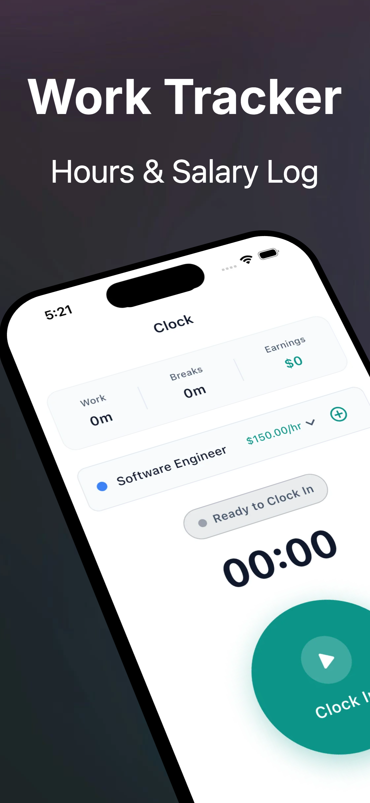
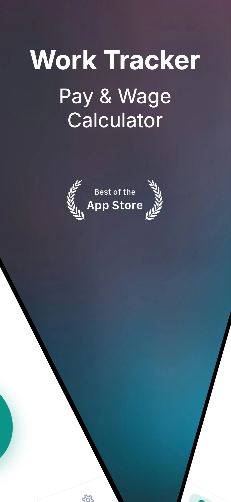
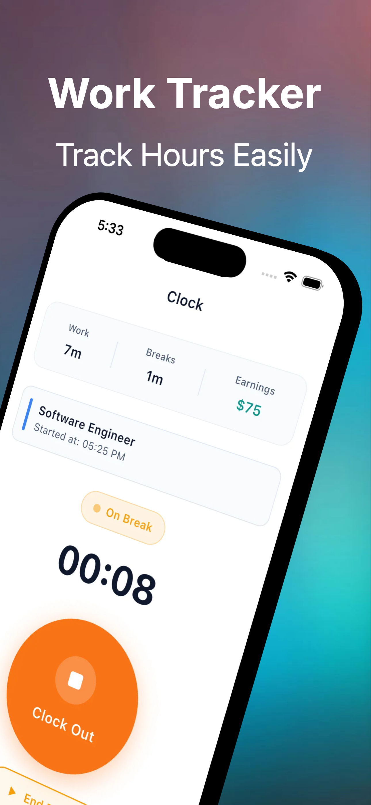
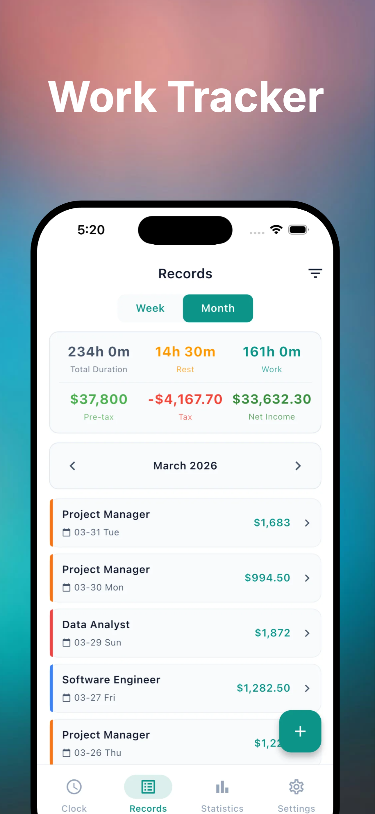
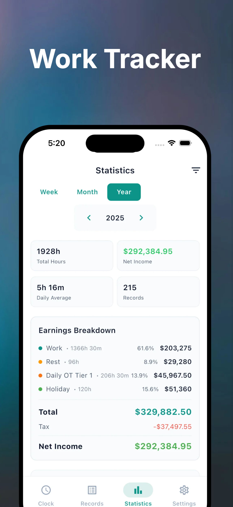

Absen masuk dan keluar dengan mudah, hitung lembur otomatis dengan preset hukum tenaga kerja 18 negara. Lihat penghasilan, kelola pekerjaan, dan export data dengan mudah.
Fitur canggih untuk mengelola jam kerja, menghitung lembur, dan mengekspor data untuk penggajian.
Absen masuk dan keluar dengan satu ketukan. Pelacakan waktu nyata menampilkan durasi sesi kerja saat ini. Dukungan untuk berbagai pekerjaan dengan kode warna.
Perhitungan lembur otomatis dengan preset untuk 18 negara termasuk China, AS, Jepang, Jerman, Prancis, Inggris, dan lainnya. Aturan yang dapat disesuaikan sepenuhnya.
Lihat tren penghasilan, distribusi jam kerja berdasarkan pekerjaan, dan peringatan lembur. Grafik yang indah memudahkan pemahaman pola kerja Anda.
Ekspor catatan waktu Anda ke Excel, CSV, atau PDF. Sempurna untuk提交gaji atau penyimpanan catatan pribadi.
Kelola berbagai pekerjaan atau posisi dengan kode warna khusus. Lacak waktu secara terpisah untuk setiap pekerjaan dan lihat statistik per pekerjaan.
Lindungi data Anda dengan kode PIN atau autentikasi biometrik (Face ID / Touch ID). Jaga privasi dan keamanan catatan waktu Anda.
Antarmuka yang bersih dan intuitif dirancang untuk absen cepat dan kemudahan melihat statistik.





Mulai melacak jam kerja Anda dalam tiga langkah sederhana.
Unduh Work Hours Tracker dari App Store dan pasang di iPhone atau iPad Anda.
Atur bahasa, mata uang, aturan lembur, dan tambahkan pekerjaan Anda. Pilih dari 18 preset negara atau sesuaikan aturan Anda sendiri.
Absen saat mulai bekerja, absen saat selesai bekerja. Lihat statistik Anda dan ekspor data kapan saja.
Unduh Work Hours Tracker gratis di App Store. Fitur pro tersedia denganlangganan.